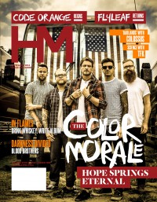

The Color Morale
|  |
| September 2014 HM |
Media coverage:
- Sep 2014 in HM "A Life of Hope", by David Stagg
Albums & reviews:
2009: We All Have Demons
- Sep 2009 in HM, by Doug Van Pelt
- Apr 2011 in HM, by Dan Frazier
- Jun 2013 in HM, by Justin Croteau

© 2011 CMnexus. Last updated September 2019. Contact: editor -AT- cmnexus -DØT- org About